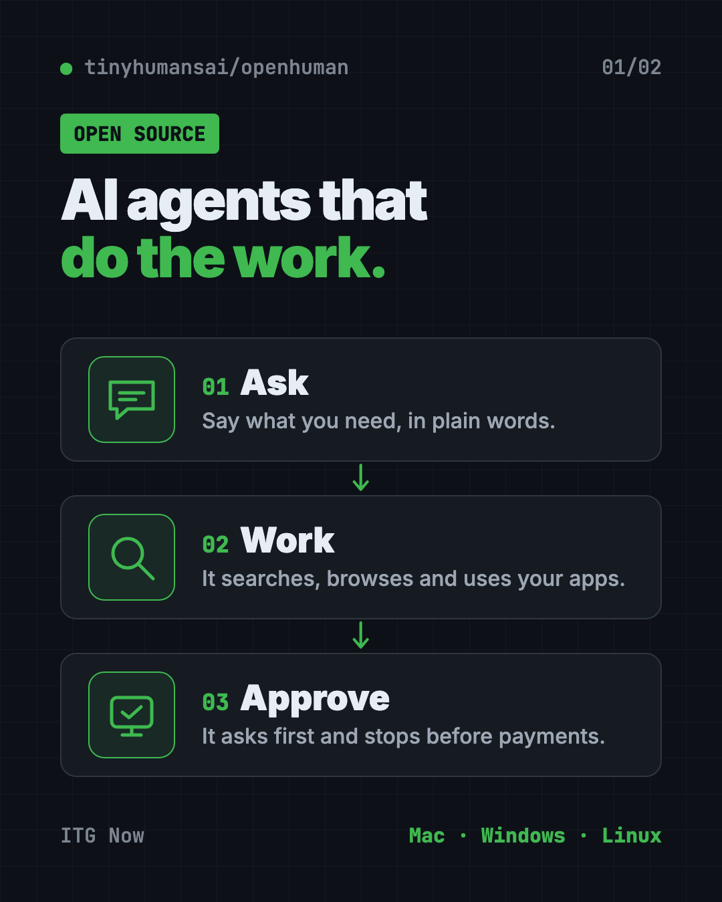
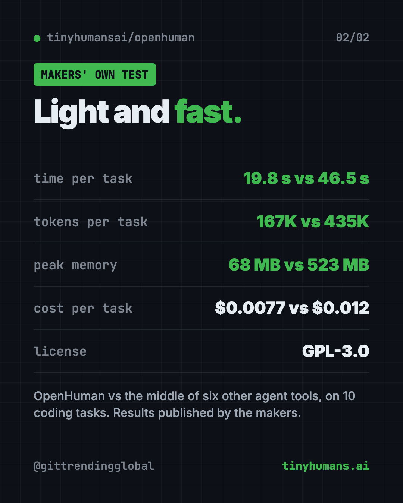

OpenHuman: Open Source AI Agent App That Runs Lean (2026)
- Free AI tools
- Published 2026-10-15
- 7 min read
- Updated 2026-10-16
- Stars 42K
- License GPL-3.0
- By the It's Trending Global team
OpenHuman is an open source AI agent app for Mac, Windows and Linux. Its agents browse, search, remember and use your apps while using less power.
OpenHuman is an open source AI agent app for Mac, Windows and Linux. Its AI helpers can search the web, use a real browser and your desktop apps, and remember what matters, while using far less computer power and text than most rivals, its makers say.
This guide covers what it is, real ways to use it, the exact install steps, and a ready prompt so an AI helper can set it up for you.
Key takeaways
- Open source under the GPL-3.0 license, with a desktop app for people and a code library for developers.
- Agents that do things, not just chat: browse, search, fill in steps and use your apps.
- Built to be light. The makers' own tests show it using 2.6x fewer tokens and about 8x less memory than the typical agent tool.
- Bring your own AI. Use local models or your own key from 26 AI providers.
- Early beta. The README warns you to "expect rough edges."
What is OpenHuman?
An AI agent is an AI helper that does tasks for you, step by step. It can look things up, click through websites and use your apps, not just answer questions.
Many agent tools are heavy. Each one can eat lots of memory and resend a big chunk of text to the AI on every step. AI companies charge by tokens, which are small chunks of text. So costs add up fast.
OpenHuman was built to fix that. Its README calls it "the fastest, cheapest, most efficient open-source agent harness." A harness is the program that runs the AI agent and gives it tools. The makers say you can run "more than 500 agents on a $10 VPS," which is a small rented server.
The README also says it became the number one trending repository on GitHub for nine days in a row, within a week of launch. It now has about 42K stars. Stars are like bookmarks.

What can OpenHuman do?
Here's what the desktop app offers, according to the README:
- Memory. It remembers your files, feeds and apps, and pulls in only what matters before each step, with sources.
- A voice agent. Talk to it and interrupt it mid-sentence. It also does dictation and spoken replies.
- Browser and desktop control. It uses a real Chrome browser and your desktop apps. It asks before anything it can't undo, and it stops before any payment.
- Web search with sources, plus a Deep Research mode.
- 119 app connections through a service called Composio, with triggers that start the agent when something happens.
- 14 messaging channels. Talk to your agent from Telegram, Discord, iMessage, email and more.
- Workflows. Set tasks to run on a schedule, with approval steps along the way.
- Safety. An approval gate, sandboxed runs, a Privacy Mode for local-only use, and passwords kept in your computer's keychain.
- Cost tracking. See the tokens and cost of every call.
💡 Tip: Turn on Privacy Mode and use a local model if you want everything to stay on your computer.
How fast and cheap is OpenHuman?
The makers ran seven agent tools on the same ten coding tasks, with the same AI model. They published the setup and results so anyone can rerun them.
Their reported results for OpenHuman, per solved task:
| OpenHuman | Middle of the other six | |
|---|---|---|
| Time | 19.8 seconds | 46.5 seconds |
| Tokens used | 167K | 435K |
| Cost | $0.0077 | $0.012 |
| Peak memory | 68 MB | 523 MB |
These are the makers' own tests on coding tasks. Your results will depend on what you ask it to do.

How to use OpenHuman (real examples)
- Research a purchase. Ask it to compare three laptops under a budget, with sources. It stops before checkout.
- Morning brief. Set a daily workflow that reads your feeds and sends a summary to Telegram.
- Answer from your files. Ask a question, and it finds the answer in your documents, with citations.
- Fill in web forms. Let it click through a tedious website for you, with your approval on each risky step.
- One agent per customer. Businesses can run many agents on one small server, so each customer gets their own.
Is OpenHuman free?
The app is open source under GPL-3.0, so you can download and use it without paying for OpenHuman itself.
The AI brain is up to you. You can use local models through Ollama, LM Studio or MLX, which run on your computer. Or you can plug in your own key from one of 26 AI providers, who may charge you for what you use.
⚠️ Heads up: An agent that clicks around for you can make mistakes. Keep the approval gate on, and start with low-risk tasks.
OpenHuman at a glance
| Price | Free app; AI providers you connect may charge |
| Works offline | With local models and Privacy Mode |
| Platforms | Mac, Windows, Linux |
| License | GPL-3.0 (open source) |
| Status | Early beta |
| Latest version | 0.64.15 (October 9, 2026) |
| Best for | People and businesses who want capable AI agents without heavy costs |
How to install OpenHuman on Mac, Windows and Linux
These steps come from the OpenHuman README. The easiest way is the desktop app.
- Go to tinyhumans.ai/openhuman, or the latest release on the project's GitHub.
- Download your file: a
.dmgfor Mac, an.msior.exefor Windows, or a.debor.AppImagefor Linux. - Install and open it like any other app.
- Connect an AI model, either a local one or your own provider key.
Install from the terminal
The install script picks the right package, checks it and installs it.
On Mac or Linux, open Terminal. Copy and paste this:
curl -fsSL https://raw.githubusercontent.com/tinyhumansai/openhuman/main/scripts/install.sh | bash
On Windows, open PowerShell. Copy and paste this:
irm https://raw.githubusercontent.com/tinyhumansai/openhuman/main/scripts/install.ps1 | iex
Want to see what the Mac and Linux script would do first? The README says to end the command with bash -s -- --dry-run instead of bash.
Let Claude or Codex set it up for you
Claude Code and OpenAI Codex are AI helpers that can run setup steps on your computer. You paste a request, it does the steps, and you approve each one.
Copy and paste this:
Please help me install OpenHuman, the open source AI agent app (github.com/tinyhumansai/openhuman).
1. Check if I'm on Mac, Windows or Linux.
2. Run the official install script in dry-run mode first and explain what it will do.
3. If I say yes, run the real install.
4. Help me connect a local model with Ollama, or my own AI key, and turn on the approval gate.
Then try asking:
Help me set up an OpenHuman workflow that sends me a news summary on Telegram every morning.
Explain OpenHuman's Privacy Mode and help me run it with a local model only.
Show me where OpenHuman tracks cost per call, so I can watch my AI spending.
Our take
OpenHuman packs a lot of features into a light, fast app. If you've found other agent tools slow or pricey, it's worth a look.
What we like:
- Open source, with a desktop app non-coders can use.
- Built-in memory, voice, browser control and messaging.
- Approval gate and a hard stop before payments.
- Public benchmark setup that anyone can rerun.
- Works with local models for privacy.
What to watch for:
- It's early beta, so expect bugs.
- The speed and cost numbers come from the makers' own tests.
- Lots of features means lots of settings to learn.
- An agent with access to your apps needs careful permissions.
Want a simpler personal assistant? See OpenClaw, your own AI assistant inside WhatsApp and Slack, Hermes Agent, or the tiny nanobot. OpenHuman also made our weekly trending list for May 18.
FAQ
Is OpenHuman an open source AI agent app?
Yes. OpenHuman is open source under GPL-3.0. It comes as a desktop app for Mac, Windows and Linux, and as a Rust library for developers.
Is OpenHuman free to use?
The app is free to download and use. You pay only for any AI provider you connect, or nothing if you use a local model.
Can OpenHuman use my browser and apps?
Yes. It drives a real Chrome browser and your desktop apps. It asks before anything it can't undo and stops before any payment.
Can I run OpenHuman with local AI models?
Yes. It supports local models through Ollama, LM Studio and MLX, plus a Privacy Mode for local-only runs.
Is OpenHuman ready for everyday use?
It's in early beta. The makers say to expect rough edges, so start with simple, low-risk tasks.
Get OpenHuman: github.com/tinyhumansai/openhuman
Follow ITG Now on Instagram for one free, useful tool every day.
Keep reading

DBX: Free Database Client for 100+ Databases, With AI (2026)
DBX is a free database client that opens 100+ kinds of databases in a 25 MB app. Its AI helper turns plain English into database queries for you.

PureMac: Free CleanMyMac Alternative, No Subscription
PureMac is a free CleanMyMac alternative. It clears junk, fully uninstalls apps and finds duplicates, with no subscription, no tracking and no scare tactics.

Strata: Run Big Local AI on a Gaming PC, Free
Strata is a free installer that runs big, private local AI on a gaming PC. It sets up a large Qwen model, so your chats never leave your computer.